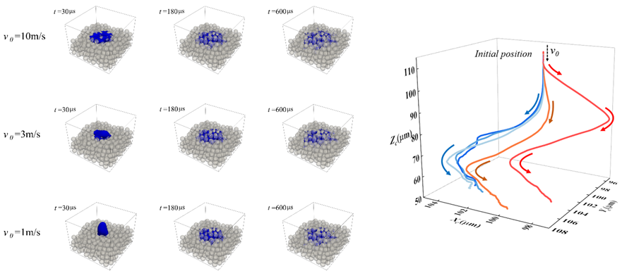
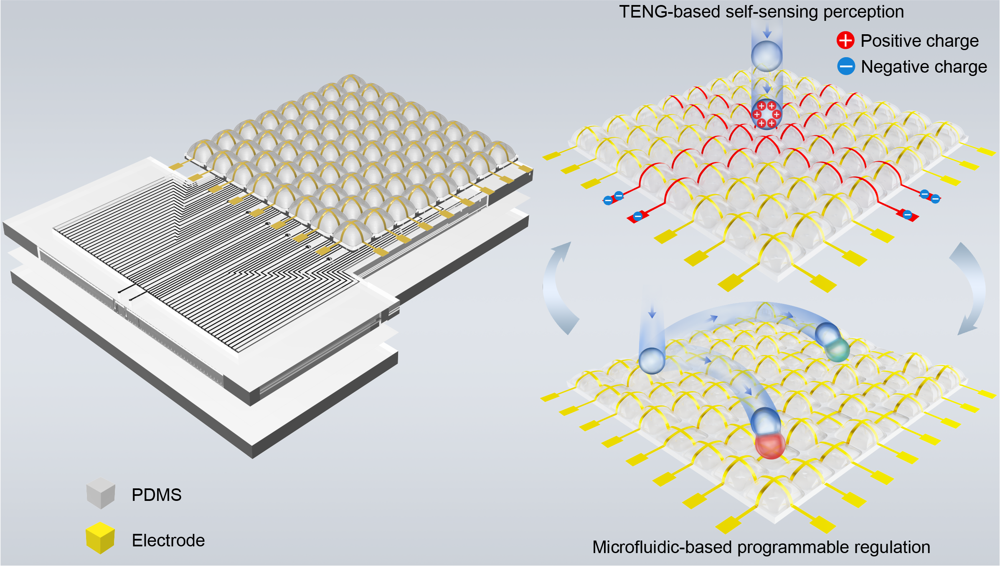

最新进展

Lattice Boltzmann simulation of droplet dynamics in binder jet three-dimensional printing

Self-evolving discovery of carrier biomaterials with ultra-low nonspecific protein adsorption for single cell analysis
